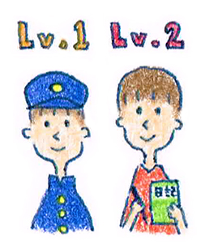

20 : レベル別のトレーニング方法
・発話は個人差が激しい

今回は発話の基礎力を高めるための知識をお伝えします。まず大事なことは自分の今の発話力を客観的に知ることです。
発話力は個人差が激しく、自分のレベルを正しく知っておかないと、
意味のないトレーニングを行うことになってしまうからです。
そのため、今回はレベル別のトレーニング方法をお伝えします。
少し退屈なコラムになるかもしれませんが、
とても大事な知識なのでめげずに読んでいきましょう。
・あなたの発話レベルは？
発話の段階は以下の6つの段階があると思ってください。
レベル１ 中学生レベルの基礎的な国語力がある
レベル２ １日の出来事を日記にかける
レベル３ 他人が楽しめる日記をかける
旅行であった出来事に対して、自分の主観を通しながら、
脚色して笑い話にしたり、オチをつけたりする
レベル４ 実際のコミュニケーションで
１日の出来事を話せる
例えば「昨日○○に言ってきたんだ〜そこには△△があってね・・・」
というような内容の話を自分からできる段階です。
レベル５ 実際のコミュニケーションで
相手が興味を持つように話すことができる
例えば「昨日○○に言ってきたんだ〜そこには△△があってね・・・
何が面白かったのかと言うと、□□でさあ〜」
というような内容の話を自分からできる段階です
みなさんはどの段階にいるでしょうか？
まずは確認してみましょう。
・発話の基礎力は文章を書いてつける
レベル１の人
まず会話をするには基本的な国語力がどうしても必要になります。
語彙が不足していると表現の幅がどうしても狭くなってしまいます。
少し大変かもしれませんが、中学生レベルの漢字の書き取りや
教科書を読んでみましょう。
ちょっと恥ずかしいかもしれませんが
基礎力が無い状態でいきなり会話の練習をしてもなかなか成果がでず、
挫折感を味わうことになります。コツコツ語彙を増やし、
表現の幅を広げるところからはじめていきましょう。
レベル２の人
中学生レベルの国語力があれば、次はブログか日記を書く習慣をつけましょう。
なぜ日記を書くのかと言うと、対人コミュニケーションよりも
文章の上で表現する方が難易度は低いからです。
例えば、
「好きな旅行の話をしてください」
といわれたとき、
対人コミュニケーションではすぐに1分程度で話を
まとめなくてはいけませんが、
文章であればじっくり考えることができます。
難易度は対人コミュニケーションのほうが高いのです。
そのため、ある意味で、文章でかけないということは
対人コミュニケーションもうまくいかないと考えることができます。
文章の上でかけないのに、対人コミュニケーションで話がいきなり
うまくなるということはまずありません。
基礎としてはまず文章の上でじっくり基本的な言語力をつけていく
必要があります。
最初は、日記を書くのも四苦八苦するでしょう。
今日あった出来事を日記にする・・・
と言っても、なかなかうまくかけないかもしれません。
そのため、基礎としてはまず事実をありのまま文章にする
習慣をつけてみてください。
今日は、朝7時におきて、会社にいった。会社では経理の帳簿処理を3時間やって、
お昼ごはんは○○さんと食べた。○○さんは△△の話をずっとしていた・・・
という感じで淡々と書いていきましょう。
目安は400文字です400文字を話すと大体1分になるので
ちょうど対人コミュニケーションで話す量になります。
そして文章を書いたら、音読を3回して、
最後に何も見ないで3回程度発言してみてください。
これを3ヶ月程度繰り返せば発話の基礎力は徐々についてきます。
レベル３の人
事実ベースの日記がさくっとかけるようになったら、
今度はもう少し高度な文章を書く練習をしていきます。
例えば、「好きな旅行先」
「鳥取のいいところ」
「マルちゃん製麺について」
「隣のおばちゃん」
といったテーマです。レベル2は時間に応じて淡々と文章をつくっていきますが、
レベル3では、時間をすっとばして自分の価値観やオチをつけて文章をつくっていきます。
こちらも3ケ月程度、音読と何も見ないで話す練習をしていきます。
レベル4の人
もともと言語力がある人は、ここからはじめてもいいでしょう。
まずは自分の話を事実ベースで対人コミュニケーションで披露してみましょう。
レベル２で作った文章を実際のコミュニケーションで使ってみる感じです。
「昨日さあ〜マルマルがあってね・・・」
「そういえ去年の祭りだけど・・・」
という感じで話していきます。内容が良い悪いは置いておき、
まずはボリュームにこだわって、ある程度長い時間話せればOKです。目安は1分です。
レベル５にいる人
こちらもレベル4と同じく、文章で書いたネタを自分から話してみます。
レベル3のネタを実際のコミュニケーションで使ってみる感じです。
詳しくは次回以降のコラムで書きますが、是非積極的に自分の考えや体験を、
自分なりに加工して表現してみましょう。
今回は発話力をつけるための基礎的なトレーニング法について
解説をしてきました。次回はもう少し実践的な練習をしていきます。
お楽しみに♪
 |
|